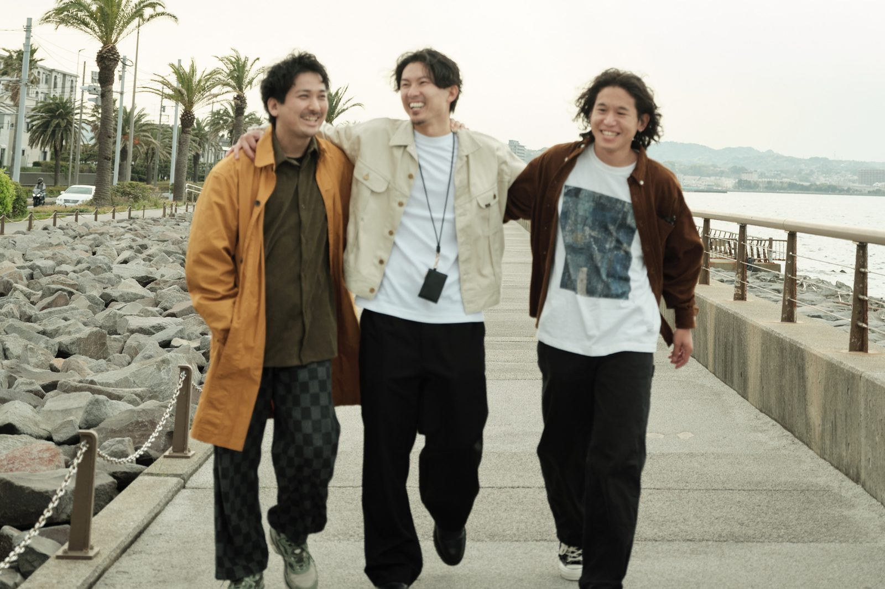
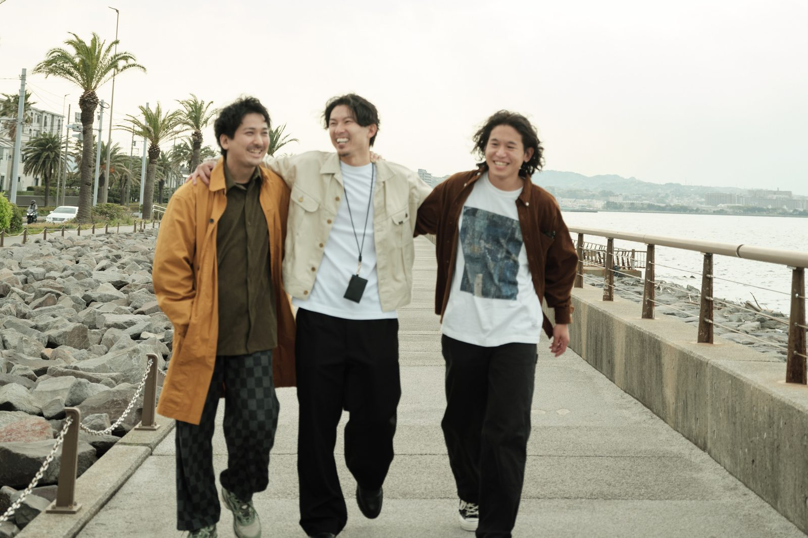
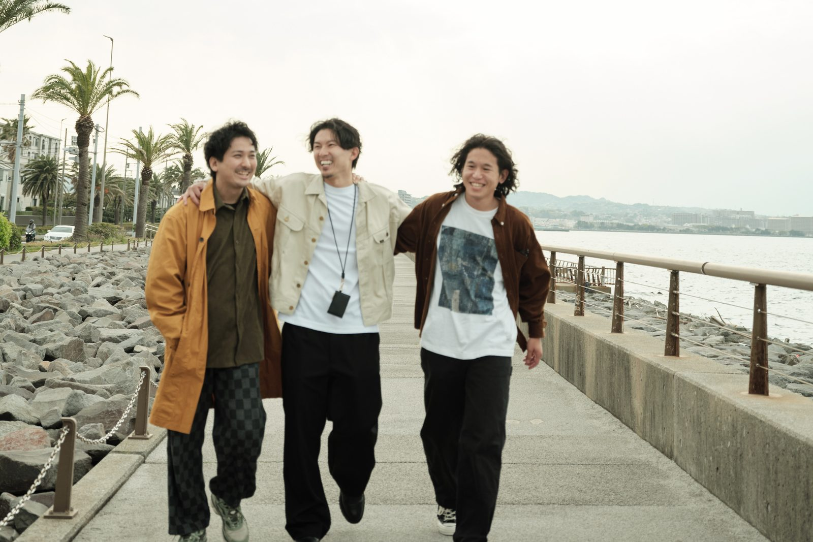
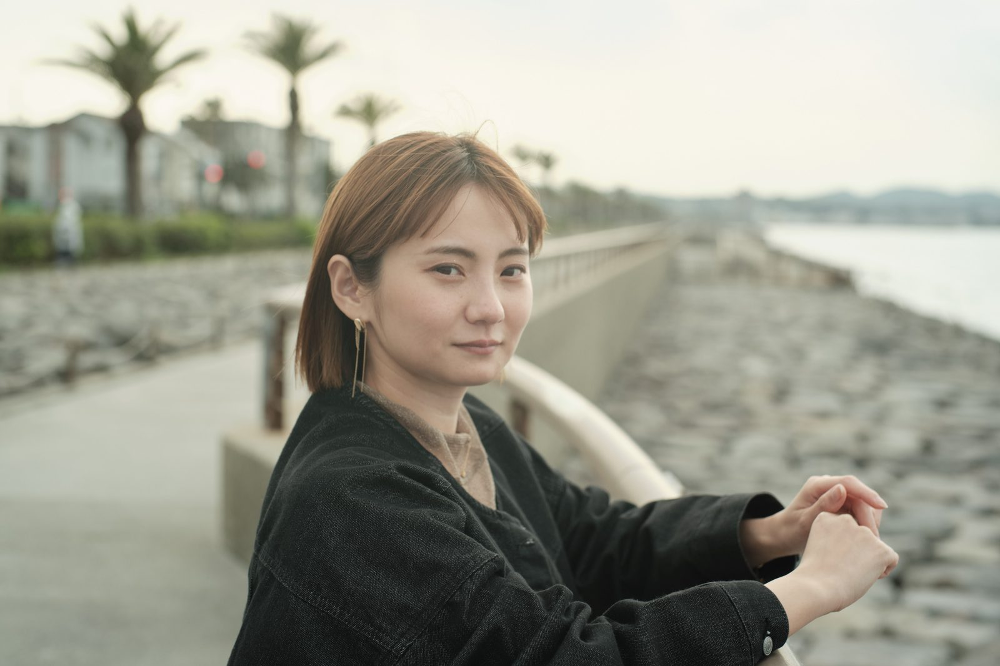

どちらも元のヒーロー写真と同じ 3:2（1600×1067）に統一しています。枠の使われ方は5本の公開ページと同じなので、変わるのは切り出しの範囲だけです。
20代後半は、引ける幅がもう残っていません。元画像が 4334×5779 の縦位置で、3:2 で切ると横幅いっぱいの 4334×2889 が上限です。そこで3案は「引き幅」ではなく上にどれだけ空を残すかで振っています。
3人は元画像の下40%にいるので、下端を揃えたまま横幅を広げています。広げるほど、まちと海が入って引きになります。
相談するほどでもない、と思っている違和感を、自分のことばにしていく90分。

相談するほどでもない、と思っている違和感を、自分のことばにしていく90分。

相談するほどでもない、と思っている違和感を、自分のことばにしていく90分。

3案とも横幅いっぱいの 4334×2889。切り出す位置を上下にずらして、頭上の空の量を変えています。上げるほど引きに見えます。
同じ温度で話せる相手がいなかった話を、自分のことばにしていく90分。
同じ温度で話せる相手がいなかった話を、自分のことばにしていく90分。

同じ温度で話せる相手がいなかった話を、自分のことばにしていく90分。
決まったら、選んだ案を5本のヒーローに入れて公開します。もっと引きたい・寄せたい場合は、位置を数値で指定してもらえれば作り直します。